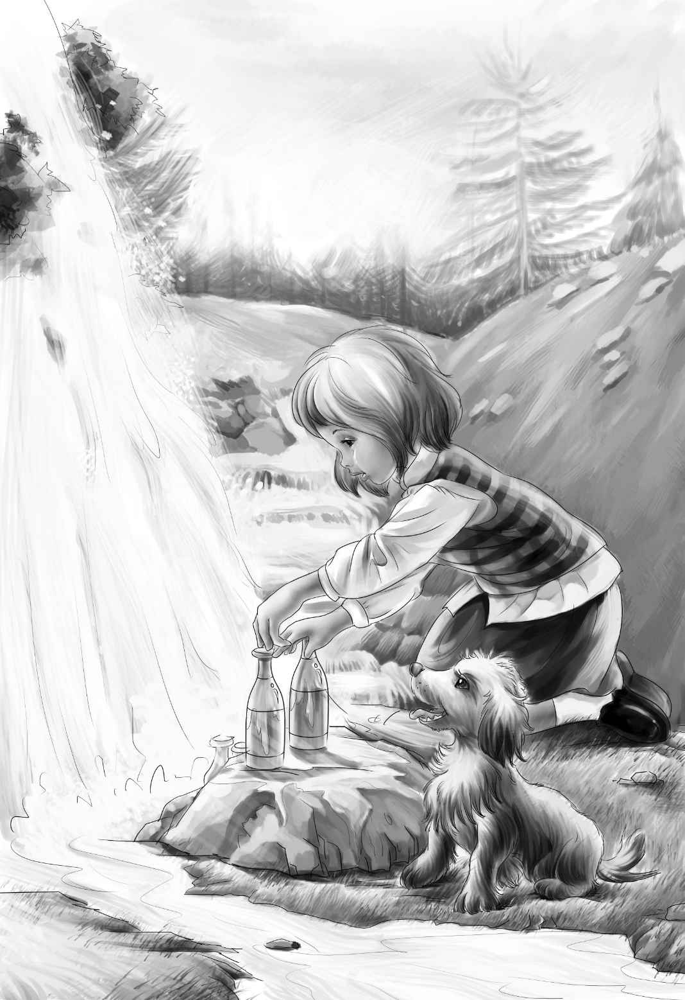

The next morning Jessie woke up first， and she got up at once， for she was the housekeeper．The dog sat in the door of the car and looked at her as she jumped down to get the milk for breakfast．Then he jumped down after her．
Jessie walked down by the little brook and stopped to look at the waterfall．It was beautiful．
“I must look in the refrigerator，” she said with a laugh．
It was a funny refrigerator．There was a rock behind the waterfall， and the night before Jessie had put the two bottles of milk in a hole in this rock．Now she took out the bottles and found that the milk was very cold．
“Is it good？” called Benny， who sat in the car door．
“It is delicious！” cried Jessie．“It is cold， too．”
She got up into the car with the milk and sat down beside Benny．Then the four children drank the milk for breakfast．
Henry said， “Today I’ll go to town and try to get some work to do．I can cut grass or work in a garden or something．Then we’ll have something besides milk for breakfast．”
He washed his hands and face and started out．
“I’m so glad you have a dog， Jessie，” he said．“Good-by！ I’ll be back at noon．”
The children looked after Henry， and then they looked at Jessie．
“What are we going to do now， Jessie？” Benny asked his sister．

“Well， Benny，” answered Jessie， “we’ll go exploring and look for treasures．We’ll begin here at the car and look and look until we find a dump．”
“What’s a dump？” asked Benny．
“Oh， Benny！” said Violet．“You know what a dump is．Old tin cans and old dishes and bottles．”
“Are old tin cans and dishes treasures？” Benny wanted to know．
“They will be treasures for us，” answered Jessie， laughing．
“And wheels？” asked Benny again．“Will there be any wheels on the dump？”
“Yes， maybe，” replied Violet．“But cups， Benny， and plates， and maybe spoons．You like to drink milk out of a cup．”
“Oh， yes，” agreed Benny politely．But anyone could see that his mind was still on wheels．
The explorers started walking down the old rusty tracks， with Watch hopping along on three legs．The other paw， still tied up with Jessie’s handkerchief， was held off the ground．But the dog looked very happy．He liked these kind children．
They all walked along through the woods， looking this way and that．After a while the old track came out into the sun， and the explorers found that they were on top of a hill．They could look down and see the town below them．
“Henry is down there，” said Jessie．
Benny was walking along behind his two sisters．
Suddenly he cried happily， “Look， Jessie！ There’s a treasure-a wheel！”
The girls looked where he was pointing， and they saw a big dump with many old bottles and tin cans on it．There were also both wheels and cups．Indeed， there were dishes of all kinds．
“Oh， Benny！” cried Jessie．“You saw the treasures first．What should we do without you！”
Violet ran over to the dump．“Here’s a white pitcher， Jessie！” she cried．
Jessie looked at it．It was all right， with only one small crack．
“Here’s a big white cup， too，” she said， happily．
“Can you use a teapot， Jessie？” asked Benny．
“Yes， indeed！” she replied．“We can put water in it．I have found two cups and a bowl．Let’s look for spoons， too！”
Violet held up what she had found-five spoons， covered with rust．
“Good！” said Jessie．“Here’s a big kettle．Let’s pile all the dishes in it．Then we can carry them back to the boxcar．”
Benny had found four wheels just alike and laid them to one side．Now he held up a pink cup．There was a big crack in it， but it had a handle．
“This will be my pink cup，” said Benny．
“I hope it will hold milk，” said Jessie， laughing．“It’s a beautiful cup， Benny．”
The children laid all their treasures， even the wheels， on a board， and the girls carried the board back to the boxcar between them．They put the dishes down by the brook．
“Now we must wash them，” said Jessie．
“All right，” agreed Benny．“We’ll wash my pink cup．”
And never did a little boy hand dishes so carefully to his sisters as Benny did．
The girls washed the dishes with soap， and Jessie used sand to get the rust off the spoons．
“There！” she said， washing the last shining spoon．“How fine they look！ But I’m afraid they still aren’t clean enough to eat from．When Henry comes， we’ll get him to build a fire．Then we can have hot water to rinse them， and they will be very clean．”
The children sat back and admired the dishes．
Suddenly Violet cried， “Oh， I know where to put them．Come and see what I found in the car last night．”
Both girls looked in at the door．
“Look on the door on the other side of the car，” said Violet．
All Jessie saw were two pieces of wood nailed to the closed door of the car．But she knew at once what was in Violet’s mind．She ran to get the board they had carried from the dump and laid it carefully across the two pieces of wood．It made a fine shelf for the dishes．
“There！” said Jessie．
The children could hardly wait to put the shining dishes on the shelf．
“Let’s put them on now，” said Violet， “and see how they look， without waiting to rinse them．”
When they were on the shelf， Violet picked some white and yellow flowers and put them in a cup full of water in the middle of the shelf．
“There！” said Jessie， stepping back to look at it．
“You said ‘There’ three times，” remarked Benny happily．
“So I did，” replied Jessie， laughing．“And I’m going to say it again．”
She pointed into the woods and said， “There！”
Henry was coming through the woods， and he carried many funny-looking bundles in his arms．But he would not open his bundles or tell what he had been doing until it was time for dinner．
“Where did you get the dishes？” he cried， when he saw the shelf．
“We went exploring，” said Violet， “and found a big dump．”
The children began telling him about their treasures．Benny told him about the tin cans and his pink cup and his wheels．Jessie took out the big kettle and asked him about building a fire．
“We want to use the dishes to eat from，” she told him， “and it’s hard to get them clean in cold water．”
So Henry made a small fire in an open place where it could not burn anything．He put big stones all around it．
“We ought to have a fireplace，” he remarked．
Jessie cleaned the kettle with sand and filled it with water．Then Henry put it on the fire．Soon the water was boiling， and Jessie rinsed the dishes carefully．
“Now I know they’re clean enough to eat from，” she said happily．